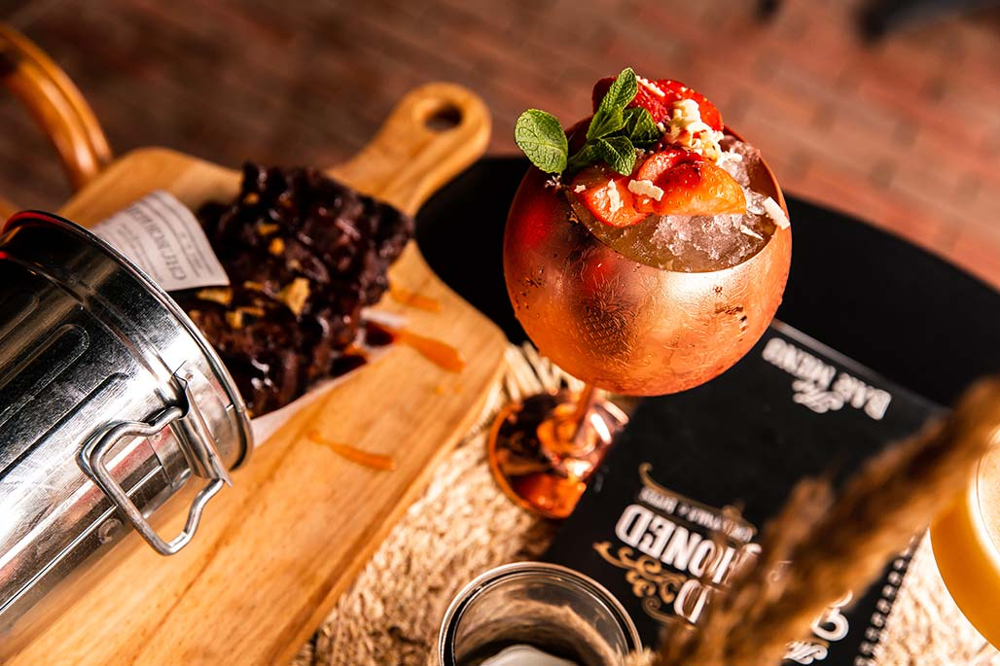
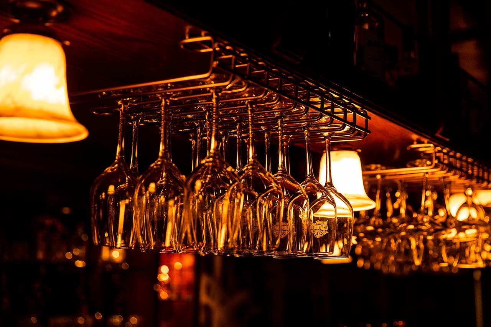
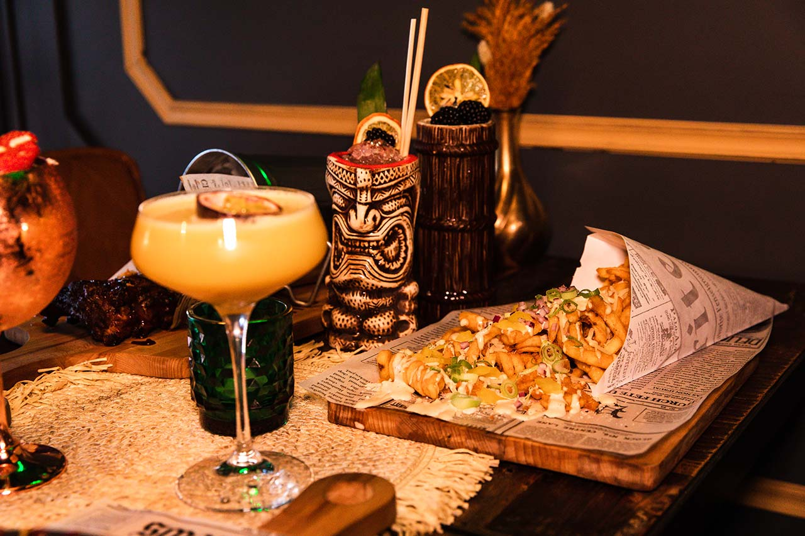
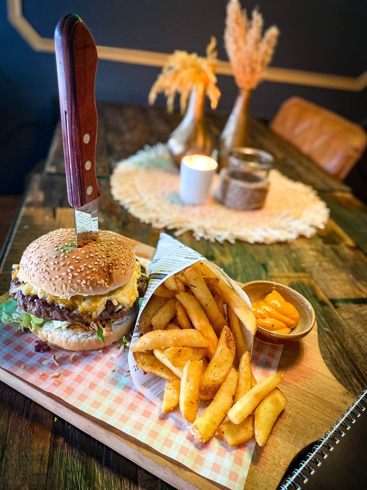
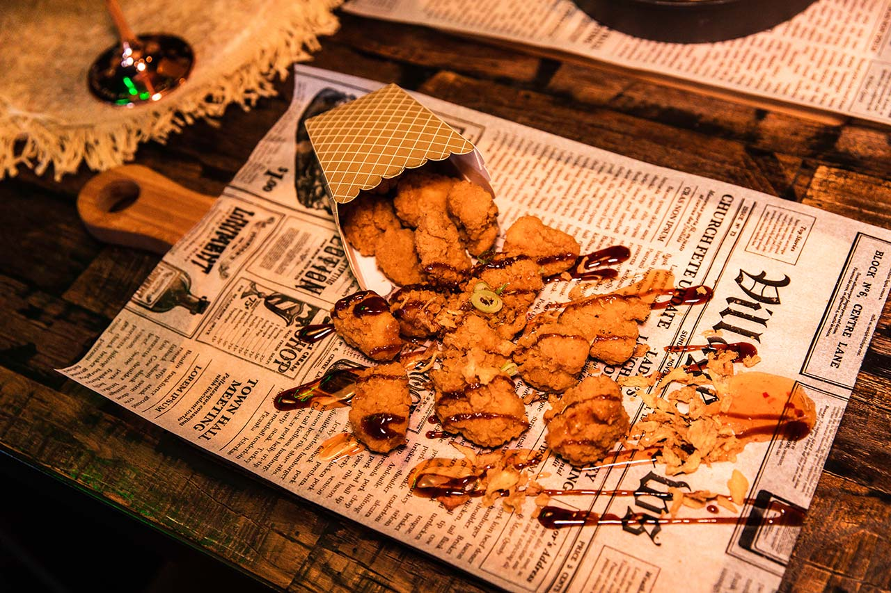

Cocktails & Bites
32 p.p.
Twee cocktails leren maken en daarna een plank met hapjes. Duurt 1,5 tot 2 uur.

Cocktails & Bites aan de Grotestraat, Rijssen
Tijdloze bar in een historisch pand. Klassiekers en eigenzinnige cocktails, fijne whisky's, bier van de tap en een kaart vol bites om te delen.
Van een bakje bitterballen bij de borrel tot spareribs als avondeten. Alle hoofdgerechten komen met friet of salade.



Met vrienden, collega's of familie leren hoe je een goede cocktail maakt. Bij ons aan de bar of bij jullie op locatie. Alcoholvrij kan ook.

32 p.p.
Twee cocktails leren maken en daarna een plank met hapjes. Duurt 1,5 tot 2 uur.
42 p.p.
Twee cocktails leren maken, samen met het foodie plateau vol streetfood. Duurt 2,5 tot 3 uur.
32 p.p.
Wij komen naar jullie toe: twee cocktails leren maken, inclusief shots. Voorrijkosten 50 euro, binnen een straal van 15 km.
Een tafel voor vanavond, een workshop met je team of een bar op je feest. Laat het ons weten, dan horen jullie snel van ons.
Liever direct contact? Bel 0548 519 804 of mail info@oldfashionedbar.nl.
+31 548 519 804
info@oldfashionedbar.nl
| Dinsdag | vanaf 16:00 |
|---|---|
| Woensdag | vanaf 16:00 |
| Donderdag | vanaf 15:00 |
| Vrijdag | vanaf 14:00 |
| Zaterdag | vanaf 13:00 |
| Zondag & maandag | gesloten |
Meals en het foodie plateau tot 21:00.